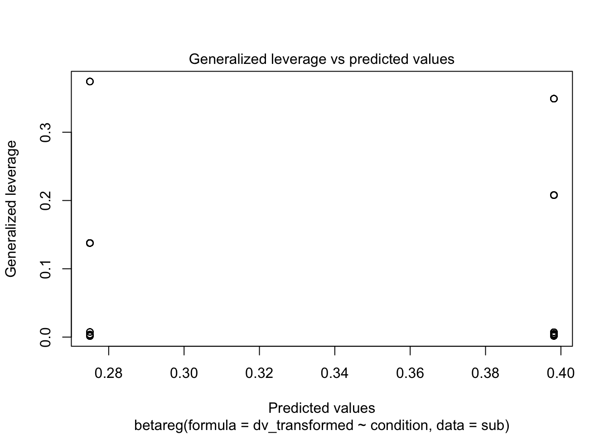
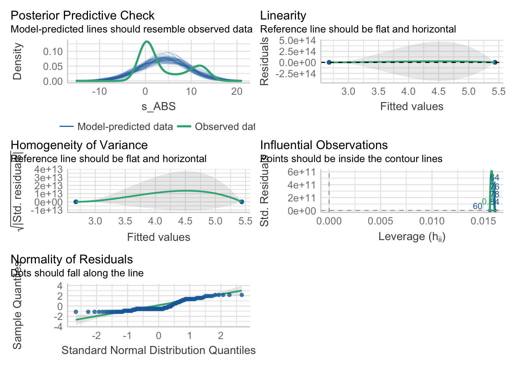
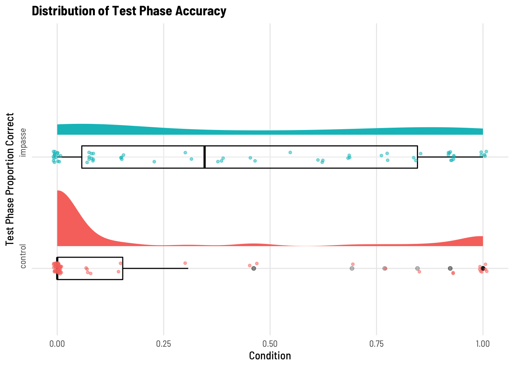
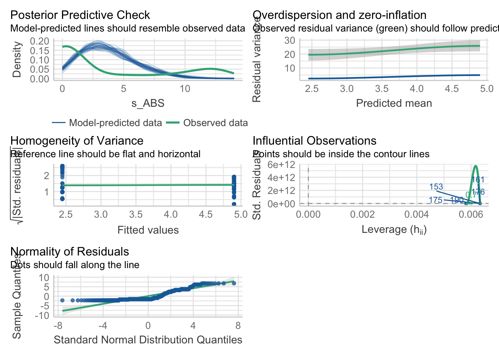
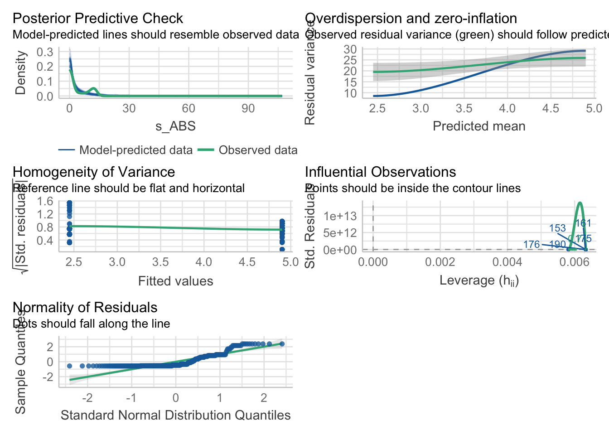
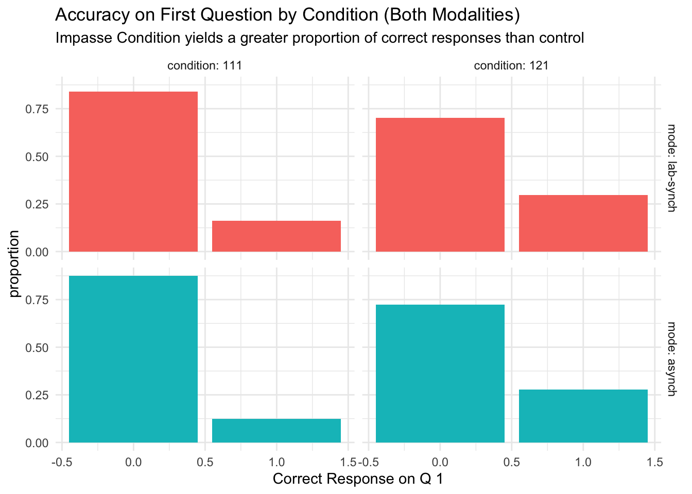

The purpose of this notebook is test the hypotheses that determined the design of the SGC3A study.
Pre-Requisite
1_sgc3A_harmonize.qmd
2_sgc3A_scoring.qmd
CODE
library(Hmisc) # %nin% operatorlibrary(ggpubr) #arrange plotslibrary(ggformula) #easy graphslibrary(report) #easystats reportinglibrary(see) #easystats visualizationlibrary(performance) #easystats model diagnosticslibrary(qqplotr) #confint on qq plotlibrary(gmodels) #contingency table and CHISQRlibrary(vcd) #mosaic plotslibrary(vcdExtra) #mosaic plotslibrary(kableExtra) #printing tables library(tidyverse) #ALL THE THINGS#OUTPUT OPTIONSlibrary(dplyr, warn.conflicts =FALSE)options(dplyr.summarise.inform =FALSE)options(ggplot2.summarise.inform =FALSE)options(scipen=1, digits=3)# Custom ggplot theme to make pretty plots# Get the font at https://fonts.google.com/specimen/Barlow+Semi+Condensedtheme_clean <-function() {theme_minimal(base_family ="Barlow Semi Condensed") +theme(panel.grid.minor =element_blank(),plot.title =element_text(family ="BarlowSemiCondensed-Bold"),axis.title =element_text(family ="BarlowSemiCondensed-Medium"),strip.text =element_text(family ="BarlowSemiCondensed-Bold",size =rel(1), hjust =0),strip.background =element_rect(fill ="grey80", color =NA))}# Make labels use Barlow by default# update_geom_defaults("label_repel", list(family = "Barlow Semi Condensed"))
Research Questions
In SGC3A we set out to answer the following question: Does posing a mental impasse improve performance on the graph comprehension task?
Specifically, we will test the following experimental hypotheses:
Experimental Hypothesis:Learners posed with impasse-inducing questions will be more likely to correct interpret the graph.
H1A | Learners in the impasse condition will have better cumulative accuracy (get more questions correctly overall)
H1B | Learners in impasse condition will be more likely to correctly answer the first question
H1C | Learners in the impasse condition will spend more time on the first question.
The Null Hypothesis asserts that no significant differences in performance will exist between learners in the impasse and control conditions.
CODE
#IMPORT DATA df_items <-read_rds('analysis/SGC3A/data/2-scored-data/sgc3a_scored_items.rds')df_subjects <-read_rds('analysis/SGC3A/data/2-scored-data/sgc3a_scored_participants.rds')#SEPARATE ITEM DATA BY QUESTION TYPEdf_scaffold <- df_items %>%filter(q <6)df_test <- df_items %>%filter(q >6) %>%filter (q %nin%c(6,9))df_nondiscrim <- df_items %>%filter (q %in%c(6,9))
H1A | CUMULATIVE PERFORMANCE
Over the course of the entire graph comprehension task does the impasse condition affect performance on the graph comprehension task?
Total Absolute Score
Cumulative absolute score gives us a measure of the exact triangular-correctness of each response given by a participant across all discriminant items (n=13) in the graph comprehension task.
Beta Regression (% Correct)
Beta regression on % correct (with standard transformation for including [0,1])
mb <-betareg(dv_transformed ~ condition, data = sub)summary(mb)
Call:
betareg(formula = dv_transformed ~ condition, data = sub)
Standardized weighted residuals 2:
Min 1Q Median 3Q Max
-1.057 -0.453 -0.216 0.541 1.690
Coefficients (mean model with logit link):
Estimate Std. Error z value Pr(>|z|)
(Intercept) -0.969 0.108 -8.97 <2e-16 ***
condition121 0.556 0.143 3.89 0.0001 ***
Phi coefficients (precision model with identity link):
Estimate Std. Error z value Pr(>|z|)
(phi) 0.6604 0.0425 15.5 <2e-16 ***
---
Signif. codes: 0 '***' 0.001 '**' 0.01 '*' 0.05 '.' 0.1 ' ' 1
Type of estimator: ML (maximum likelihood)
Log-likelihood: 506 on 3 Df
Pseudo R-squared: 0.0725
Number of iterations: 12 (BFGS) + 1 (Fisher scoring)
CODE
plot(mb)

Linear Regression (Transformed # Correct)
Linear Regression (# Correct)
Research Question
Does posing a mental impasse improve performance?
Hypothesis
(H1A) Participants in the IMPASSE condition will have significantly higher cumulative performance than those in the CONTROL condition.
Analysis Strategy
OLS Linear Regression s_NABS ~ condition
Justification
(0) goal is to understand how much variance in absolute score is accounted for by condition
(1) linearity assumption TODO
(2) homoscedasticity assumption: TODO
(3) independence assumption : observations correspond to individual participants and are thus independent
(2) normality assumption : TODO
Steps
(1) Calculate regression model using lmer
(2) Interpret coefficients
(3) Interpret ANOVA and \(R^2\) value
(4) Model diagnostics
Inference
For in-lab data collection an OLS linear regression predicting cumulative absolute score by experimental condition explains a statistically significant though small 7.5% variance in score (F(1,124) = 10.1, p < 0.01). The estimated beta coefficient (\(\beta\) = 2.76, 95% CI [1.04, 4.48]) predicts that participants in the impasse condition will on average score 2.76 points (21%) higher than those in the control condition.
For the online replication, an OLS linear regression model predicting cumulative absolute score by condition explains a statistically significant though small 5.5% of variance in absolute score (F(1,202) = 11.73, p < 0.001). The beta coefficient for condition indicates that on average, participants in the IMPASSE group scored 2.3 points higher on the task than those in the control condition (\(\beta\) = 2.28, CI[0.97, 3.59]).
TODO FIX MEAN LINE
CODE
#VISUALIZE distribution of response accuracy across SUBJECTS#HISTOGRAMstats = df_subjects %>%group_by(condition, mode) %>% dplyr::summarise(mean =mean(s_ABS))gf_density(~s_ABS, data = df_subjects) %>%gf_vline(xintercept =4, color ="blue") %>%gf_facet_grid(condition~mode, labeller = label_both) %>%gf_lims(x =c(0, 13)) %>%gf_vline(data = stats, xintercept =~mean, color ="red") +labs(x ="Cumulative Absolute Score",y ="proportion of subjects",title ="Subject Cumulative Score (Absolute)",subtitle ="Score distributions are comparable across modalities and different across conditions") +theme_minimal()
Warning: geom_vline(): Ignoring `mapping` because `xintercept` was provided.
In-Lab Data Collection
CODE
#SCORE predicted by CONDITIONm1 <-lm(s_ABS ~ condition, data = df_subjects %>%filter(mode=="lab-synch"))paste("Model")
[1] "Model"
CODE
summary(m1)
Call:
lm(formula = s_ABS ~ condition, data = df_subjects %>% filter(mode ==
"lab-synch"))
Residuals:
Min 1Q Median 3Q Max
-5.44 -2.68 -2.68 4.31 10.32
Coefficients:
Estimate Std. Error t value Pr(>|t|)
(Intercept) 2.677 0.620 4.32 0.000031 ***
condition121 2.760 0.869 3.17 0.0019 **
---
Signif. codes: 0 '***' 0.001 '**' 0.01 '*' 0.05 '.' 0.1 ' ' 1
Residual standard error: 4.88 on 124 degrees of freedom
Multiple R-squared: 0.0752, Adjusted R-squared: 0.0677
F-statistic: 10.1 on 1 and 124 DF, p-value: 0.00189
CODE
paste("Partition Variance")
[1] "Partition Variance"
CODE
anova(m1)
Analysis of Variance Table
Response: s_ABS
Df Sum Sq Mean Sq F value Pr(>F)
condition 1 240 239.9 10.1 0.0019 **
Residuals 124 2951 23.8
---
Signif. codes: 0 '***' 0.001 '**' 0.01 '*' 0.05 '.' 0.1 ' ' 1
CODE
paste("Confidence Interval on Parameter Estimates")
Warning: 'data_findcols()' is deprecated and will be removed in a future update.
Its usage is discouraged. Please use 'data_find()' instead.
Warning: 'data_findcols()' is deprecated and will be removed in a future update.
Its usage is discouraged. Please use 'data_find()' instead.
Warning: 'data_findcols()' is deprecated and will be removed in a future update.
Its usage is discouraged. Please use 'data_find()' instead.
We fitted a linear model (estimated using OLS) to predict s_ABS with condition (formula: s_ABS ~ condition). The model explains a statistically significant and weak proportion of variance (R2 = 0.08, F(1, 124) = 10.08, p = 0.002, adj. R2 = 0.07). The model's intercept, corresponding to condition = 111, is at 2.68 (95% CI [1.45, 3.90], t(124) = 4.32, p < .001). Within this model:
- The effect of condition [121] is statistically significant and positive (beta = 2.76, 95% CI [1.04, 4.48], t(124) = 3.17, p = 0.002; Std. beta = 0.55, 95% CI [0.21, 0.89])
Standardized parameters were obtained by fitting the model on a standardized version of the dataset. 95% Confidence Intervals (CIs) and p-values were computed using the Wald approximation.
CODE
check_model(m1)

For in-lab data collection an OLS linear regression predicting cumulative absolute score by experimental condition explains a statistically significant though small 7.5% variance in score (F(1,124) = 10.1, p < 0.01). The estimated beta coefficient (\(\beta\) = 2.76, 95% CI [1.04, 4.48]) predicts that participants in the impasse condition will on average score 2.76 points (21%) higher than those in the control condition.
CODE
#HISTOGRAMstats = df_subjects %>%group_by(condition, mode) %>% dplyr::summarise(mean =mean(s_ABS))gf_density(~s_ABS, data = df_subjects) %>%gf_facet_grid(condition~mode, labeller = label_both) %>%gf_lims(x =c(0, 13)) %>%gf_vline(data = stats, xintercept =~mean, color ="red") +labs(x ="Cumulative Absolute Score",y ="proportion of subjects",title ="Subject Cumulative Score (Absolute)",subtitle ="Score distributions are comparable across modalities and different across conditions") +theme_minimal()

Online Replication
CODE
#SCORE predicted by CONDITIONm1 <-lm(s_ABS ~ condition, data = df_subjects %>%filter(mode=="asynch"))paste("Model")
[1] "Model"
CODE
summary(m1)
Call:
lm(formula = s_ABS ~ condition, data = df_subjects %>% filter(mode ==
"asynch"))
Residuals:
Min 1Q Median 3Q Max
-4.58 -3.58 -2.30 3.42 10.70
Coefficients:
Estimate Std. Error t value Pr(>|t|)
(Intercept) 2.302 0.485 4.75 3.8e-06 ***
condition121 2.281 0.666 3.43 0.00074 ***
---
Signif. codes: 0 '***' 0.001 '**' 0.01 '*' 0.05 '.' 0.1 ' ' 1
Residual standard error: 4.75 on 202 degrees of freedom
Multiple R-squared: 0.0549, Adjusted R-squared: 0.0502
F-statistic: 11.7 on 1 and 202 DF, p-value: 0.000745
CODE
paste("Partition Variance")
[1] "Partition Variance"
CODE
anova(m1)
Analysis of Variance Table
Response: s_ABS
Df Sum Sq Mean Sq F value Pr(>F)
condition 1 264 264.5 11.7 0.00074 ***
Residuals 202 4554 22.5
---
Signif. codes: 0 '***' 0.001 '**' 0.01 '*' 0.05 '.' 0.1 ' ' 1
CODE
paste("Confidence Interval on Parameter Estimates")
For the online replication, an OLS linear regression model predicting cumulative absolute score by condition explains a statistically significant though small 5.5% of variance in absolute score (F(1,202) = 11.73, p < 0.001). The beta coefficient for condition indicates that on average, participants in the IMPASSE group scored 2.3 points higher on the task than those in the control condition (CI[0.97, 3.59]).
Note
From these models we can reasonably conclude that the impasse condition yielded a small but reliable improvement in performance across items in the graph reading task.
The outcome variable absolute score is clearly not normal. As it represents the cumulative number of items a participant has answered correctly, we can consider it a type of count, (ie. count of the number of questions the participant got correct) and attempt to model it using a General Linear Model with the Poisson distribution (and the default log-link function).
Warning: 'data_findcols()' is deprecated and will be removed in a future update.
Its usage is discouraged. Please use 'data_find()' instead.
Warning: 'data_findcols()' is deprecated and will be removed in a future update.
Its usage is discouraged. Please use 'data_find()' instead.
Warning: 'data_findcols()' is deprecated and will be removed in a future update.
Its usage is discouraged. Please use 'data_find()' instead.
Warning: 'data_findcols()' is deprecated and will be removed in a future update.
Its usage is discouraged. Please use 'data_find()' instead.
Warning: 'data_findcols()' is deprecated and will be removed in a future update.
Its usage is discouraged. Please use 'data_find()' instead.
We fitted a poisson model (estimated using ML) to predict s_ABS with condition (formula: s_ABS ~ condition). The model's explanatory power is substantial (Nagelkerke's R2 = 0.34). The model's intercept, corresponding to condition = 111, is at 0.90 (95% CI [0.79, 0.99], p < .001). Within this model:
- The effect of condition [121] is statistically significant and positive (beta = 0.69, 95% CI [0.57, 0.81], p < .001; Std. beta = 0.69, 95% CI [0.57, 0.81])
Standardized parameters were obtained by fitting the model on a standardized version of the dataset. 95% Confidence Intervals (CIs) and p-values were computed using
CODE
check_model(mp1)

CODE
library(MASS)
Attaching package: 'MASS'
The following object is masked from 'package:dplyr':
select
CODE
#SCORE predicted by CONDITION --> POISSON DISTRIBUTIONmnb1 <-glm.nb(s_ABS ~ condition, data = df_subjects )paste("Model")
[1] "Model"
CODE
summary(mnb1)
Call:
glm.nb(formula = s_ABS ~ condition, data = df_subjects, init.theta = 0.3477194388,
link = log)
Deviance Residuals:
Min 1Q Median 3Q Max
-1.374 -1.204 -0.697 0.436 1.296
Coefficients:
Estimate Std. Error z value Pr(>|z|)
(Intercept) 0.896 0.144 6.21 5.2e-10 ***
condition121 0.694 0.197 3.53 0.00042 ***
---
Signif. codes: 0 '***' 0.001 '**' 0.01 '*' 0.05 '.' 0.1 ' ' 1
(Dispersion parameter for Negative Binomial(0.348) family taken to be 1)
Null deviance: 333.29 on 329 degrees of freedom
Residual deviance: 321.13 on 328 degrees of freedom
AIC: 1482
Number of Fisher Scoring iterations: 1
Theta: 0.3477
Std. Err.: 0.0368
2 x log-likelihood: -1476.2640
CODE
paste("Partition Variance")
[1] "Partition Variance"
CODE
anova(mnb1)
Warning in anova.negbin(mnb1): tests made without re-estimating 'theta'
Warning: 'data_findcols()' is deprecated and will be removed in a future update.
Its usage is discouraged. Please use 'data_find()' instead.
Warning: 'data_findcols()' is deprecated and will be removed in a future update.
Its usage is discouraged. Please use 'data_find()' instead.
Warning: 'data_findcols()' is deprecated and will be removed in a future update.
Its usage is discouraged. Please use 'data_find()' instead.
Warning: 'data_findcols()' is deprecated and will be removed in a future update.
Its usage is discouraged. Please use 'data_find()' instead.
Warning: 'data_findcols()' is deprecated and will be removed in a future update.
Its usage is discouraged. Please use 'data_find()' instead.
We fitted a negative-binomial model (estimated using ML) to predict s_ABS with condition (formula: s_ABS ~ condition). The model's explanatory power is weak (Nagelkerke's R2 = 0.06). The model's intercept, corresponding to condition = 111, is at 0.90 (95% CI [0.62, 1.19], p < .001). Within this model:
- The effect of condition [121] is statistically significant and positive (beta = 0.69, 95% CI [0.31, 1.08], p < .001; Std. beta = 0.69, 95% CI [0.31, 1.08])
Standardized parameters were obtained by fitting the model on a standardized version of the dataset. 95% Confidence Intervals (CIs) and p-values were computed using
CODE
check_model(mnb1)

CODE
#Which is a better fit? linear or poisson?compare_performance(m1,mp1)
The graph comprehension tasks includes 15 questions completed in sequence. But the first question the reader encounters (Q1) is the most important, as it is their first exposure to the unconventional triangular coordinate system.
TODO: - does impasse yield different exploration behavior? (characterize mouse) - does impasse yield more time on task? (characterize response time ? number of answers then de-selected?)
TODO: Think about characterizing how variable the interpretations are across a participant. Do they form an interpretation and hold it constant? Or do they change question to question.
Response Accuracy of First Question by Condition
Chi Square | Accuracy ~ Condition
Research Question
Does the frequency of correct (vs) incorrect responses on the first question differ by condition? [Is response accuracy independent of condition?]
Analysis Strategy
Chi-Square test of independence on outcome score_niceABS by condition for df_items where q == 1
Justification
(0) simplest method to examine independence of two categorical factors; logistic regression is recommended for binomial ~ continuous
(1) independence assumption : as we only consider responses on the first question, each observation corresponds to an individual subject, and are thus independent
(2) frequency size assumption : expected frequency in each cell of the contingency table is greater than 5 (more than 5 correct , more than 5 incorrect responses)
Steps
(1) Express raw data as contingency table & visualize
(2) Calculate Chi-Squared Statistic and p-value
(3) Interpret Odds-Ratio as effect size
Inference
Lab For the in-lab data collection (n=126) the Pearson’s Chi-squared test (of independence) indicates a relationship between response accuracy on the first question and experimental condition approaching statistical significance, \(\chi^2\) (1) = 10.3, p = 0.07. In this particular data sample, the odds ratio (2.18, p = 0.055, 95% CI [0.982, +Inf]) indicates that the odds of producing a correct response on the first question were 2.18 times greater if a subject was in the impasse condition, than in the control condition.
Online For online data collection (n=204), a Pearson’s Chi-squared test (of independence) indicates a statistically significant relationship between response accuracy on the first question and experimental condition, \(\chi^2\) (1) = 7.26, p = 0.009. The odds ratio (2.68, p = 0.005, 95% CI [1.37, +Inf]) indicates that the odds of producing a correct response on the first question were 2.68 times greater if a subject was in the impasse condition, than in the control condition.
CODE
#FITER THE DATASETdf = df_items %>%filter(q==1) #PROPORTIONAL BAR CHARTgf_props(~score_niceABS, data = df, fill =~mode) %>%gf_facet_grid(mode~condition, labeller = label_both) +labs(x ="Correct Response on Q 1",title ="Accuracy on First Question by Condition (Both Modalities)",subtitle="Impasse Condition yields a greater proportion of correct responses than control ")+theme_minimal()+theme(legend.position ="none")

A proportional bar chart visualizing the proportion of incorrect (x =0) vs correct (x = 1) responses in each condition (right/left facet) for each data collection modality (top/bottom) reveal that the pattern of responses appear the same regardless of the data collection modality. In both data collection sessions, the proportion of incorrect responses is much greater than the proportion of correct responses, regardless of condition. In the impasse condition, the difference in proportions is smaller than the control condition (i.e. There are more correct responses in the impasse condition than the control condition).
CODE
#MOSAIC PLOTvcd::mosaic(main="Accuracy on First Question by Condition (Both Modalities)",data = df, score_niceABS ~ condition, rot_labels=c(0,90,0,0),offset_varnames =c(left =4.5), offset_labels =c(left =-0.5),just_labels ="right",spacing =spacing_dimequal(unit(1:2, "lines")))
CODE
#PRINT CONTINGENCY TABLEtitle ="Proportion of Correct Responses On First Item (Both Modalities)"item.contingency <- df %>% dplyr::select(condition, score_niceABS) %>%table() %>%prop.table() %>%addmargins()item.contingency %>%kbl (caption = title) %>%kable_classic()
Proportion of Correct Responses On First Item (Both Modalities)
0
1
Sum
111
0.412
0.067
0.479
121
0.373
0.148
0.521
Sum
0.785
0.215
1.000
A mosaic plot condition by response accuracy on the first question (across both data collection modalities) reveals the same pattern (the mosaic plot is an alternative visualization technique to the proportional bar chart). The relative size of condition boxes (111 vs 121) reflects that the sample is roughly evenly split across experimental conditions. The difference in size between 0 (incorrect) and 1 (correct) reflects that the proportion of correct responses (1) is greater in the impasse condition (121).
Next, we compute a contingency table and Pearson’s Chi-Squared test for each data collection modality.
CODE
df = df_items %>%filter(q==1) %>%filter(mode =="lab-synch")CrossTable( x = df$condition, y = df$score_niceABS, fisher =TRUE, chisq=TRUE, expected =TRUE, sresid =TRUE)
Cell Contents
|-------------------------|
| N |
| Expected N |
| Chi-square contribution |
| N / Row Total |
| N / Col Total |
| N / Table Total |
|-------------------------|
Total Observations in Table: 126
| df$score_niceABS
df$condition | 0 | 1 | Row Total |
-------------|-----------|-----------|-----------|
111 | 52 | 10 | 62 |
| 47.730 | 14.270 | |
| 0.382 | 1.278 | |
| 0.839 | 0.161 | 0.492 |
| 0.536 | 0.345 | |
| 0.413 | 0.079 | |
-------------|-----------|-----------|-----------|
121 | 45 | 19 | 64 |
| 49.270 | 14.730 | |
| 0.370 | 1.238 | |
| 0.703 | 0.297 | 0.508 |
| 0.464 | 0.655 | |
| 0.357 | 0.151 | |
-------------|-----------|-----------|-----------|
Column Total | 97 | 29 | 126 |
| 0.770 | 0.230 | |
-------------|-----------|-----------|-----------|
Statistics for All Table Factors
Pearson's Chi-squared test
------------------------------------------------------------
Chi^2 = 3.27 d.f. = 1 p = 0.0707
Pearson's Chi-squared test with Yates' continuity correction
------------------------------------------------------------
Chi^2 = 2.55 d.f. = 1 p = 0.111
Fisher's Exact Test for Count Data
------------------------------------------------------------
Sample estimate odds ratio: 2.18
Alternative hypothesis: true odds ratio is not equal to 1
p = 0.0909
95% confidence interval: 0.86 5.84
Alternative hypothesis: true odds ratio is less than 1
p = 0.979
95% confidence interval: 0 5.03
Alternative hypothesis: true odds ratio is greater than 1
p = 0.0547
95% confidence interval: 0.982 Inf
For the in-lab data collection (n=126) the Pearson’s Chi-squared test (of independence) indicates a relationship between response accuracy on the first question and experimental condition approaching statistical significance, \(\chi^2\) (1) = 10.3, p = 0.07. Thus we have insufficient evidence to reject the null hypothesis that the odds ratio is equal to 1. In this particular data sample, the odds ratio (Odds Ratio = 2.18, p = 0.055, 95% CI [0.982, +Inf]) indicates that the odds of producing a correct response on the first question were 2.18 times greater if a subject was in the impasse condition, than in the control condition .
CODE
df = df_items %>%filter(q==1) %>%filter(mode =="asynch")CrossTable( x = df$condition, y = df$score_niceABS, fisher =TRUE, chisq=TRUE, expected =TRUE, sresid =TRUE)
Cell Contents
|-------------------------|
| N |
| Expected N |
| Chi-square contribution |
| N / Row Total |
| N / Col Total |
| N / Table Total |
|-------------------------|
Total Observations in Table: 204
| df$score_niceABS
df$condition | 0 | 1 | Row Total |
-------------|-----------|-----------|-----------|
111 | 84 | 12 | 96 |
| 76.235 | 19.765 | |
| 0.791 | 3.050 | |
| 0.875 | 0.125 | 0.471 |
| 0.519 | 0.286 | |
| 0.412 | 0.059 | |
-------------|-----------|-----------|-----------|
121 | 78 | 30 | 108 |
| 85.765 | 22.235 | |
| 0.703 | 2.711 | |
| 0.722 | 0.278 | 0.529 |
| 0.481 | 0.714 | |
| 0.382 | 0.147 | |
-------------|-----------|-----------|-----------|
Column Total | 162 | 42 | 204 |
| 0.794 | 0.206 | |
-------------|-----------|-----------|-----------|
Statistics for All Table Factors
Pearson's Chi-squared test
------------------------------------------------------------
Chi^2 = 7.26 d.f. = 1 p = 0.00707
Pearson's Chi-squared test with Yates' continuity correction
------------------------------------------------------------
Chi^2 = 6.35 d.f. = 1 p = 0.0117
Fisher's Exact Test for Count Data
------------------------------------------------------------
Sample estimate odds ratio: 2.68
Alternative hypothesis: true odds ratio is not equal to 1
p = 0.00894
95% confidence interval: 1.23 6.17
Alternative hypothesis: true odds ratio is less than 1
p = 0.998
95% confidence interval: 0 5.42
Alternative hypothesis: true odds ratio is greater than 1
p = 0.00539
95% confidence interval: 1.37 Inf
For online data collection (n=204), a Pearson’s Chi-squared test (of independence) indicates a statistically significant relationship between response accuracy on the first question and experimental condition, \(\chi^2\) (1) = 7.26, p = 0.009. Thus we have sufficient evidence to reject the null hypothesis that the odds ratio is equal to 1. The odds ratio (Odds Ratio = 2.68, p = 0.005, 95% CI [1.37, +Inf]) indicates that the odds of producing a correct response on the first question were 2.68 times greater if a subject was in the impasse condition, than in the control condition .
CODE
df = df_items %>%filter(q==1) CrossTable( x = df$condition, y = df$score_niceABS, fisher =TRUE, chisq=TRUE, expected =TRUE, sresid =TRUE)
Cell Contents
|-------------------------|
| N |
| Expected N |
| Chi-square contribution |
| N / Row Total |
| N / Col Total |
| N / Table Total |
|-------------------------|
Total Observations in Table: 330
| df$score_niceABS
df$condition | 0 | 1 | Row Total |
-------------|-----------|-----------|-----------|
111 | 136 | 22 | 158 |
| 124.006 | 33.994 | |
| 1.160 | 4.232 | |
| 0.861 | 0.139 | 0.479 |
| 0.525 | 0.310 | |
| 0.412 | 0.067 | |
-------------|-----------|-----------|-----------|
121 | 123 | 49 | 172 |
| 134.994 | 37.006 | |
| 1.066 | 3.887 | |
| 0.715 | 0.285 | 0.521 |
| 0.475 | 0.690 | |
| 0.373 | 0.148 | |
-------------|-----------|-----------|-----------|
Column Total | 259 | 71 | 330 |
| 0.785 | 0.215 | |
-------------|-----------|-----------|-----------|
Statistics for All Table Factors
Pearson's Chi-squared test
------------------------------------------------------------
Chi^2 = 10.3 d.f. = 1 p = 0.0013
Pearson's Chi-squared test with Yates' continuity correction
------------------------------------------------------------
Chi^2 = 9.5 d.f. = 1 p = 0.00205
Fisher's Exact Test for Count Data
------------------------------------------------------------
Sample estimate odds ratio: 2.46
Alternative hypothesis: true odds ratio is not equal to 1
p = 0.00131
95% confidence interval: 1.37 4.53
Alternative hypothesis: true odds ratio is less than 1
p = 1
95% confidence interval: 0 4.12
Alternative hypothesis: true odds ratio is greater than 1
p = 0.000928
95% confidence interval: 1.49 Inf
Combining data across both sessions (n=330), a Pearson’s Chi-squared test suggests a statistically significant relationship between response accuracy on the first question and experimental condition, \(\chi_2\) (1) = 10.3, p = 0.001. The sample odds ratio (2.46, p = 0.001, 95% CI [1.37, 4.53]) indicates that the odds of providing a correct response to the first question are 2.46 higher for subjects in the impasse condition than those in the control condition.
---subtitle: 'Study SGC3A | 4 Hypothesis Testing'---\newpage# Hypothesis Testing {#sec-SGC3A-hypotesting}**TODO**- MODEL diagnostics- review models already created in ARCHIVE?- explore response consistency- run w/ s_ABS*The purpose of this notebook is test the hypotheses that determined the design of the SGC3A study.*+------------------------+| Pre-Requisite |+========================+| 1_sgc3A_harmonize.qmd\ || 2_sgc3A_scoring.qmd |+------------------------+```{r}#| label: SETUP#| warning : false#| message : falselibrary(Hmisc) # %nin% operatorlibrary(ggpubr) #arrange plotslibrary(ggformula) #easy graphslibrary(report) #easystats reportinglibrary(see) #easystats visualizationlibrary(performance) #easystats model diagnosticslibrary(qqplotr) #confint on qq plotlibrary(gmodels) #contingency table and CHISQRlibrary(vcd) #mosaic plotslibrary(vcdExtra) #mosaic plotslibrary(kableExtra) #printing tables library(tidyverse) #ALL THE THINGS#OUTPUT OPTIONSlibrary(dplyr, warn.conflicts =FALSE)options(dplyr.summarise.inform =FALSE)options(ggplot2.summarise.inform =FALSE)options(scipen=1, digits=3)# Custom ggplot theme to make pretty plots# Get the font at https://fonts.google.com/specimen/Barlow+Semi+Condensedtheme_clean <-function() {theme_minimal(base_family ="Barlow Semi Condensed") +theme(panel.grid.minor =element_blank(),plot.title =element_text(family ="BarlowSemiCondensed-Bold"),axis.title =element_text(family ="BarlowSemiCondensed-Medium"),strip.text =element_text(family ="BarlowSemiCondensed-Bold",size =rel(1), hjust =0),strip.background =element_rect(fill ="grey80", color =NA))}# Make labels use Barlow by default# update_geom_defaults("label_repel", list(family = "Barlow Semi Condensed"))```**Research Questions**In SGC3A we set out to answer the following question: Does posing a mental impasse improve performance on the graph comprehension task?*Specifically, we will test the following experimental hypotheses:***Experimental Hypothesis:** *Learners posed with impasse-inducing questions will be more likely to correct interpret the graph.*- H1A \| Learners in the impasse condition will have better cumulative accuracy (get more questions correctly overall)- H1B \| Learners in impasse condition will be more likely to correctly answer the first question- H1C \| Learners in the impasse condition will spend more time on the first question.The Null Hypothesis asserts that *no significant differences in performance will exist between learners in the impasse and control conditions.*```{r}#| label: IMPORT-DATA#| warning : false#| message : false#IMPORT DATA df_items <-read_rds('analysis/SGC3A/data/2-scored-data/sgc3a_scored_items.rds')df_subjects <-read_rds('analysis/SGC3A/data/2-scored-data/sgc3a_scored_participants.rds')#SEPARATE ITEM DATA BY QUESTION TYPEdf_scaffold <- df_items %>%filter(q <6)df_test <- df_items %>%filter(q >6) %>%filter (q %nin%c(6,9))df_nondiscrim <- df_items %>%filter (q %in%c(6,9))```## H1A \| CUMULATIVE PERFORMANCEOver the course of the entire graph comprehension task does the impasse condition affect performance on the graph comprehension task?### Total Absolute ScoreCumulative absolute score gives us a measure of the exact triangular-correctness of each response given by a participant across all discriminant items (n=13) in the graph comprehension task.#### Beta Regression (% Correct)Beta regression on % correct (with standard transformation for including \[0,1\])```{r}library(betareg)sub <- df_subjects %>% dplyr::select(condition, DV_percent_NABS)n =nrow(sub) %>%unlist()sub$dv_transformed = (sub$DV_percent_NABS * (n-1) +0.5)/nhistogram(sub$dv_transformed)histogram(df_subjects$DV_percent_NABS)mb <-betareg(dv_transformed ~ condition, data = sub)summary(mb)plot(mb)```#### Linear Regression (Transformed \# Correct)#### Linear Regression (# Correct)+-----------------------+----------------------------------------------------------------------------------------------------------------------------------------------------------------------------------------------------------------------------------------------------------------------------------------------------------------------------------------------------------------------------------------------------------------------------------------------------+| Research Question | Does posing a mental impasse improve performance? |+=======================+====================================================================================================================================================================================================================================================================================================================================================================================================================================================+| **Hypothesis** | (H1A) Participants in the IMPASSE condition will have significantly higher cumulative performance than those in the CONTROL condition. |+-----------------------+----------------------------------------------------------------------------------------------------------------------------------------------------------------------------------------------------------------------------------------------------------------------------------------------------------------------------------------------------------------------------------------------------------------------------------------------------+| **Analysis Strategy** | OLS Linear Regression `s_NABS` \~ `condition` |+-----------------------+----------------------------------------------------------------------------------------------------------------------------------------------------------------------------------------------------------------------------------------------------------------------------------------------------------------------------------------------------------------------------------------------------------------------------------------------------+| **Justification** | \(0\) goal is to understand how much variance in absolute score is accounted for by condition || | || | \(1\) linearity assumption **TODO** || | || | \(2\) homoscedasticity assumption: **TODO** || | || | \(3\) independence assumption : observations correspond to individual participants and are thus independent || | || | \(2\) normality assumption : **TODO** |+-----------------------+----------------------------------------------------------------------------------------------------------------------------------------------------------------------------------------------------------------------------------------------------------------------------------------------------------------------------------------------------------------------------------------------------------------------------------------------------+| **Steps** | \(1\) Calculate regression model using `lmer` || | || | \(2\) Interpret coefficients || | || | \(3\) Interpret ANOVA and $R^2$ value || | || | \(4\) Model diagnostics |+-----------------------+----------------------------------------------------------------------------------------------------------------------------------------------------------------------------------------------------------------------------------------------------------------------------------------------------------------------------------------------------------------------------------------------------------------------------------------------------+| **Inference** | **For in-lab data collection** an OLS linear regression predicting cumulative absolute score by experimental condition explains a statistically significant though small 7.5% variance in score (F(1,124) = 10.1, p \< 0.01). The estimated beta coefficient ($\beta$ = 2.76, 95% CI \[1.04, 4.48\]) predicts that participants in the impasse condition will on average score 2.76 points (21%) higher than those in the control condition. || | || | **For the online replication**, an OLS linear regression model predicting cumulative absolute score by condition explains a statistically significant though small 5.5% of variance in absolute score (F(1,202) = 11.73, p \< 0.001). The beta coefficient for condition indicates that on average, participants in the IMPASSE group scored 2.3 points higher on the task than those in the control condition ($\beta$ = 2.28, CI\[0.97, 3.59\]). |+-----------------------+----------------------------------------------------------------------------------------------------------------------------------------------------------------------------------------------------------------------------------------------------------------------------------------------------------------------------------------------------------------------------------------------------------------------------------------------------+TODO FIX MEAN LINE```{r}#| label: VIS-SUBJECT-ABS#VISUALIZE distribution of response accuracy across SUBJECTS#HISTOGRAMstats = df_subjects %>%group_by(condition, mode) %>% dplyr::summarise(mean =mean(s_ABS))gf_density(~s_ABS, data = df_subjects) %>%gf_vline(xintercept =4, color ="blue") %>%gf_facet_grid(condition~mode, labeller = label_both) %>%gf_lims(x =c(0, 13)) %>%gf_vline(data = stats, xintercept =~mean, color ="red") +labs(x ="Cumulative Absolute Score",y ="proportion of subjects",title ="Subject Cumulative Score (Absolute)",subtitle ="Score distributions are comparable across modalities and different across conditions") +theme_minimal()```##### In-Lab Data Collection```{r}#| label: MODEL-cumulative-score-LAB#SCORE predicted by CONDITIONm1 <-lm(s_ABS ~ condition, data = df_subjects %>%filter(mode=="lab-synch"))paste("Model")summary(m1)paste("Partition Variance")anova(m1)paste("Confidence Interval on Parameter Estimates")confint(m1)report(m1) #sanity checkcheck_model(m1)```**For in-lab data collection** an OLS linear regression predicting cumulative absolute score by experimental condition explains a statistically significant though small 7.5% variance in score (F(1,124) = 10.1, p \< 0.01). The estimated beta coefficient ($\beta$ = 2.76, 95% CI \[1.04, 4.48\]) predicts that participants in the impasse condition will on average score 2.76 points (21%) higher than those in the control condition.```{r}#HISTOGRAMstats = df_subjects %>%group_by(condition, mode) %>% dplyr::summarise(mean =mean(s_ABS))gf_density(~s_ABS, data = df_subjects) %>%gf_facet_grid(condition~mode, labeller = label_both) %>%gf_lims(x =c(0, 13)) %>%gf_vline(data = stats, xintercept =~mean, color ="red") +labs(x ="Cumulative Absolute Score",y ="proportion of subjects",title ="Subject Cumulative Score (Absolute)",subtitle ="Score distributions are comparable across modalities and different across conditions") +theme_minimal()```##### Online Replication```{r}#| label: MODEL-cumulative-score-ONLINE#SCORE predicted by CONDITIONm1 <-lm(s_ABS ~ condition, data = df_subjects %>%filter(mode=="asynch"))paste("Model")summary(m1)paste("Partition Variance")anova(m1)paste("Confidence Interval on Parameter Estimates")confint(m1)#report(m1) #sanity check```**For the online replication**, an OLS linear regression model predicting cumulative absolute score by condition explains a statistically significant though small 5.5% of variance in absolute score (F(1,202) = 11.73, p \< 0.001). The beta coefficient for condition indicates that on average, participants in the IMPASSE group scored 2.3 points higher on the task than those in the control condition (CI\[0.97, 3.59\]).::: callout-note**From these models we can reasonably conclude that the impasse condition yielded a small but reliable improvement in performance across items in the graph reading task.**:::##### **Model Diagnostics**```{r}# plot(performance_accuracy(m1, method = "boot"))# see::check_distribution(m1)``````{r}#| label: DIAGNOSTICS-ABSCORE-LINEAR#| message: true#| warning: false# check_model(m1)# Linearity# Homogeneity of Variance# Infuential Observations# Normality of Residuals# plot(check_collinearity(m1))# plot(check_normality(m1), type = "qq")# plot(check_heteroscedasticity(m1))# plot(result <- check_homogeneity(m1))```**TODO**##### Combined```{r}#| label: MODEL-SUB_ABS-combined#SCORE predicted by CONDITIONm1 <-lm(s_ABS ~ condition, data = df_subjects)paste("Model")summary(m1)paste("Partition Variance")anova(m1)paste("Confidence Interval on Parameter Estimates")confint(m1)#report(m1) #sanity checkcheck_model(m1)```#### Poisson RegressionThe outcome variable absolute score is clearly not normal. As it represents the cumulative number of items a participant has answered correctly, we can consider it a type of *count*, (ie. count of the number of questions the participant got correct) and attempt to model it using a General Linear Model with the Poisson distribution (and the default log-link function).```{r}# library('fitdistrplus')# plot(fitdist(df_subjects$s_ABS,"pois"))# plot(fitdist(df_subjects$s_ABS,"norm"))# plot(fitdist(df_subjects$s_ABS,"beta"))# # # plotdist(df_subjects$s_ABS, histo = TRUE, demp = TRUE)# descdist(df_subjects$s_ABS, discrete=FALSE, boot=500)``````{r}#| label: MODEL-ABSCORE-POISSON#SCORE predicted by CONDITION --> POISSON DISTRIBUTIONmp1 <-glm(s_ABS ~ condition, data = df_subjects, family ="poisson")paste("Model")summary(mp1)paste("Partition Variance")anova(mp1)paste("Confidence Interval on Parameter Estimates")confint(mp1)report(mp1) #sanity check``````{r}#| label: DIAGNOSTICS-ABSCORE-POISSONcheck_model(mp1)``````{r}#| label: MODEL-ABSCORE-NEGBINOMlibrary(MASS)#SCORE predicted by CONDITION --> POISSON DISTRIBUTIONmnb1 <-glm.nb(s_ABS ~ condition, data = df_subjects )paste("Model")summary(mnb1)paste("Partition Variance")anova(mnb1)paste("Confidence Interval on Parameter Estimates")confint(mnb1)report(mnb1) #sanity checkcheck_model(mnb1)``````{r}#Which is a better fit? linear or poisson?compare_performance(m1,mp1)```## INITIAL PERFORMANCEThe graph comprehension tasks includes 15 questions completed in sequence. But the first question the reader encounters (Q1) is the most important, as it is their *first exposure* to the unconventional triangular coordinate system.TODO: - does impasse yield different exploration behavior? (characterize mouse) - does impasse yield more time on task? (characterize response time ? number of answers then de-selected?)TODO: Think about characterizing how variable the interpretations are across a participant. Do they form an interpretation and hold it constant? Or do they change question to question.### Response Accuracy of First Question by Condition#### Chi Square \| Accuracy \~ Condition+-----------------------+---------------------------------------------------------------------------------------------------------------------------------------------------------------------------------------------------------------------------------------------------------------------------------------------------------------------------------------------------------------------------------------------------------------------------------------------------------------------------------------------------------------------------------------------------+| Research Question | Does the frequency of correct (vs) incorrect responses on the first question differ by condition? \[Is response accuracy independent of condition?\] |+=======================+===================================================================================================================================================================================================================================================================================================================================================================================================================================================================================================================================================+| **Analysis Strategy** | Chi-Square test of independence on outcome `score_niceABS` by `condition` for `df_items` where `q == 1` |+-----------------------+---------------------------------------------------------------------------------------------------------------------------------------------------------------------------------------------------------------------------------------------------------------------------------------------------------------------------------------------------------------------------------------------------------------------------------------------------------------------------------------------------------------------------------------------------+| **Justification** | \(0\) simplest method to examine independence of two categorical factors; logistic regression is recommended for binomial \~ continuous || | || | \(1\) independence assumption : as we only consider responses on the first question, each observation corresponds to an individual subject, and are thus independent || | || | \(2\) frequency size assumption : expected frequency in each cell of the contingency table is greater than 5 (more than 5 correct , more than 5 incorrect responses) |+-----------------------+---------------------------------------------------------------------------------------------------------------------------------------------------------------------------------------------------------------------------------------------------------------------------------------------------------------------------------------------------------------------------------------------------------------------------------------------------------------------------------------------------------------------------------------------------+| **Steps** | \(1\) Express raw data as contingency table & visualize || | || | \(2\) Calculate Chi-Squared Statistic and p-value || | || | \(3\) Interpret Odds-Ratio as effect size |+-----------------------+---------------------------------------------------------------------------------------------------------------------------------------------------------------------------------------------------------------------------------------------------------------------------------------------------------------------------------------------------------------------------------------------------------------------------------------------------------------------------------------------------------------------------------------------------+| **Inference** | **Lab** For the in-lab data collection (n=126) the Pearson's Chi-squared test (of independence) indicates a relationship between response accuracy on the first question and experimental condition approaching statistical significance, $\chi^2$ (1) = 10.3, p = 0.07. In this particular data sample, the odds ratio (2.18, p = 0.055, 95% CI \[0.982, +Inf\]) indicates that the odds of producing a correct response on the first question were 2.18 times greater if a subject was in the impasse condition, than in the control condition. || | || | **Online** For online data collection (n=204), a Pearson's Chi-squared test (of independence) indicates a statistically significant relationship between response accuracy on the first question and experimental condition, $\chi^2$ (1) = 7.26, p = 0.009. The odds ratio (2.68, p = 0.005, 95% CI \[1.37, +Inf\]) indicates that the odds of producing a correct response on the first question were 2.68 times greater if a subject was in the impasse condition, than in the control condition. |+-----------------------+---------------------------------------------------------------------------------------------------------------------------------------------------------------------------------------------------------------------------------------------------------------------------------------------------------------------------------------------------------------------------------------------------------------------------------------------------------------------------------------------------------------------------------------------------+```{r}#| label: VIS-Q1ACC.by.COND-bar#FITER THE DATASETdf = df_items %>%filter(q==1) #PROPORTIONAL BAR CHARTgf_props(~score_niceABS, data = df, fill =~mode) %>%gf_facet_grid(mode~condition, labeller = label_both) +labs(x ="Correct Response on Q 1",title ="Accuracy on First Question by Condition (Both Modalities)",subtitle="Impasse Condition yields a greater proportion of correct responses than control ")+theme_minimal()+theme(legend.position ="none")```A proportional bar chart visualizing the proportion of incorrect (x =0) vs correct (x = 1) responses in each condition (right/left facet) for each data collection modality (top/bottom) reveal that the pattern of responses appear the same regardless of the data collection modality. In both data collection sessions, the proportion of incorrect responses is much greater than the proportion of correct responses, regardless of condition. In the impasse condition, the difference in proportions is smaller than the control condition (i.e. There are more correct responses in the impasse condition than the control condition).```{r}#| label: VIS-Q1ACC.by.COND-mosaic#MOSAIC PLOTvcd::mosaic(main="Accuracy on First Question by Condition (Both Modalities)",data = df, score_niceABS ~ condition, rot_labels=c(0,90,0,0),offset_varnames =c(left =4.5), offset_labels =c(left =-0.5),just_labels ="right",spacing =spacing_dimequal(unit(1:2, "lines")))#PRINT CONTINGENCY TABLEtitle ="Proportion of Correct Responses On First Item (Both Modalities)"item.contingency <- df %>% dplyr::select(condition, score_niceABS) %>%table() %>%prop.table() %>%addmargins()item.contingency %>%kbl (caption = title) %>%kable_classic()```A mosaic plot condition by response accuracy on the first question (across both data collection modalities) reveals the same pattern (the mosaic plot is an alternative visualization technique to the proportional bar chart). The relative size of condition boxes (111 vs 121) reflects that the sample is roughly evenly split across experimental conditions. The difference in size between 0 (incorrect) and 1 (correct) reflects that the proportion of correct responses (1) is greater in the impasse condition (121).Next, we compute a contingency table and Pearson's Chi-Squared test for each data collection modality.```{r}#| label : CHISQR-Q1TRI.by.COND-LABdf = df_items %>%filter(q==1) %>%filter(mode =="lab-synch")CrossTable( x = df$condition, y = df$score_niceABS, fisher =TRUE, chisq=TRUE, expected =TRUE, sresid =TRUE)```**For the in-lab data collection** (n=126) the Pearson's Chi-squared test (of independence) indicates a relationship between response accuracy on the first question and experimental condition approaching statistical significance, $\chi^2$ (1) = 10.3, p = 0.07. Thus we have insufficient evidence to reject the null hypothesis that the odds ratio is equal to 1. In this particular data sample, the odds ratio (Odds Ratio = 2.18, p = 0.055, 95% CI \[0.982, +Inf\]) indicates that the odds of producing a correct response on the first question were 2.18 times greater if a subject was in the impasse condition, than in the control condition .```{r}#| label : CHISQR-Q1TRI.by.COND-ONLINEdf = df_items %>%filter(q==1) %>%filter(mode =="asynch")CrossTable( x = df$condition, y = df$score_niceABS, fisher =TRUE, chisq=TRUE, expected =TRUE, sresid =TRUE)```**For online data collection** (n=204), a Pearson's Chi-squared test (of independence) indicates a statistically significant relationship between response accuracy on the first question and experimental condition, $\chi^2$ (1) = 7.26, p = 0.009. Thus we have sufficient evidence to reject the null hypothesis that the odds ratio is equal to 1. The odds ratio (Odds Ratio = 2.68, p = 0.005, 95% CI \[1.37, +Inf\]) indicates that the odds of producing a correct response on the first question were 2.68 times greater if a subject was in the impasse condition, than in the control condition .```{r}#| label : CHISQR-Q1TRI.by.COND-BOTHdf = df_items %>%filter(q==1) CrossTable( x = df$condition, y = df$score_niceABS, fisher =TRUE, chisq=TRUE, expected =TRUE, sresid =TRUE)```**Combining data across both sessions** (n=330), a Pearson's Chi-squared test suggests a statistically significant relationship between response accuracy on the first question and experimental condition, $\chi_2$ (1) = 10.3, p = 0.001. The sample odds ratio (2.46, p = 0.001, 95% CI \[1.37, 4.53\]) indicates that the odds of providing a correct response to the first question are 2.46 higher for subjects in the impasse condition than those in the control condition.## RESOURCES- https://rpkgs.datanovia.com/ggpubr/reference/index.html